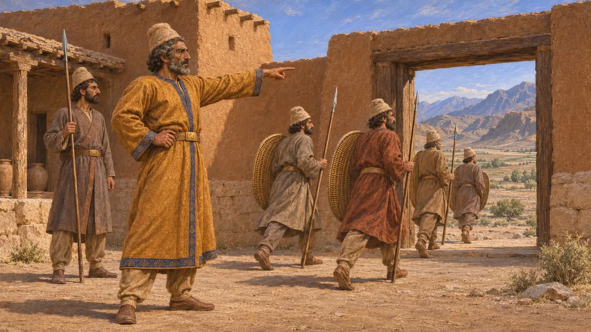
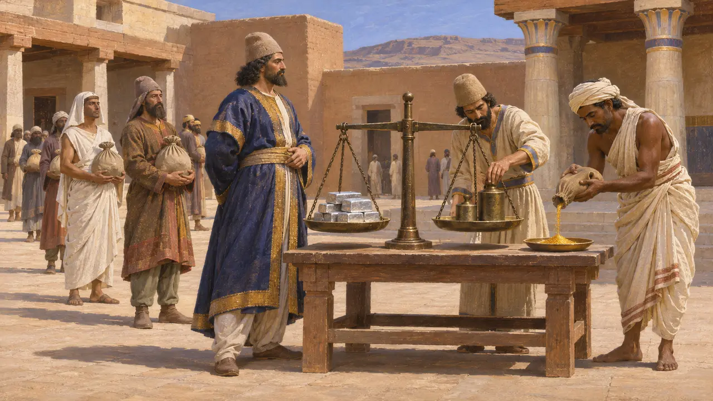
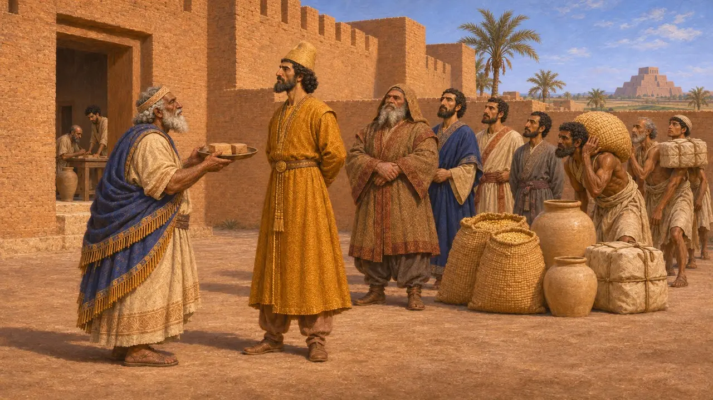
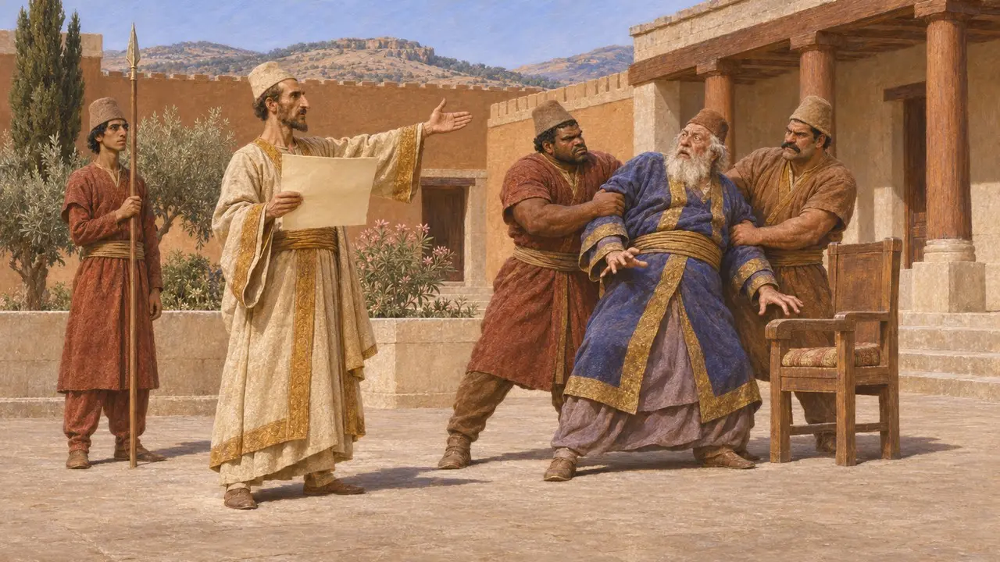

サトラップ
アケメネス朝の州を治めた王の総督、紀元前6～4世紀
サトラップとは王に任じられた属州の総督であり、通常はペルシアの貴族が、サルディス、メンフィス、バビロン、バクトラといった州都から統治した。サトラップは王の名において貢納を徴収し、兵を集め、争いを裁き、秩序を保った。この制度によって、少数のペルシア人支配層がエーゲ海からインダス川に至る広大な領土をまとめ上げることができたのである。
ゲームでは： 多くのステージで、プレイヤーはサトラップとして統治し、王のために属州を築き上げる。これは単純化である。実際のサトラップの多くはペルシア人貴族であり、主な務めは貢納と兵の徴発、そして治安の維持であった。

王の官職を示すペルシアの称号
同時代の記録古代ペルシア語の称号は「フシャサパーヴァン」で、通常「王国の守護者」と訳される。ダレイオスのベヒストゥン碑文は、この称号を紀元前522〜521年の反徒と戦った忠臣たちに用いており、その中にはバクトリアのサトラップであるダダルシと、アラコシアのサトラップであるヴィヴァナがいる。ベヒストゥン碑文は両者をペルシア人であり、ダレイオスの臣下であると記している。ギリシア人はこの語を「サトラペス」とした。
DB §38; DB §45

ヘロドトスと20の州
古代の記述ヘロドトスによれば、ダレイオスは帝国を20の州に分け、ペルシア人はこれをサトラップ領と呼び、それぞれが納める貢納の額を定めた。大半は銀をタラントン単位で納め、インド人は砂金で納めた。彼は各州の民族とその額を列挙し、ペルシス自体は貢納を納めなかったと述べる。彼の主張では、キュロスとカンビュセスの時代には定まった貢納はなく、贈り物があるだけだったという。
Herodotus 3.89-97

州、土地、移り変わる境界
係争中王の碑文が列挙するのはサトラップ領ではなく服属した国々であり、その一覧も碑文ごとに異なる。ベヒストゥン碑文は23の国を挙げ、後代の碑文はさらに多くを挙げる。いずれもヘロドトスの言う20とは一致せず、彼の一覧が実際の徴税台帳を反映したものか、彼自身による整理なのかは歴史家の間で議論が分かれている。バビロニアの文書からはダレイオス以前にすでに総督が在任していたことがわかり、彼の改革は新たな制度を創設したというより、既存の制度を再編したものだったと考えられる。
DB §6; Herodotus 3.89-94; P. Briant, From Cyrus to Alexander, 2002
文書に見るサトラップ
同時代の記録バビロニアの商業文書は、キュロスとカンビュセスの治世にグバルがバビロンおよび「河向こう」の総督であったと記している。これは地中海沿岸にまで及ぶ広大な州であった。彼はダレイオスの即位を助けたゴブリュアスとは別人である。紀元前509〜493年頃のペルセポリス城砦文書には、王やサトラップが発行した封印付きの旅行証を携えて配給を受け取る旅人たちが記録されており、その発行者にはおそらくサルディスのアルタフレネスも含まれていた。これらの文書は、サトラップが王の道の制度を実際に支える結節点であったことを示している。
M. Stolper, Entrepreneurs and Empire, 1985; R. Hallock, Persepolis Fortification Tablets, 1969; P. Briant, From Cyrus to Alexander, 2002

総督の忠誠を保つ
古代の記述ヘロドトスによれば、サルディスのサトラップであったオロイテスはダレイオスに背いたが、王の使者が王の書簡を読み聞かせると、自らの護衛に殺されたという。ヘロドトスはまた、ダレイオスがエジプトのアリュアンデスを反逆の罪で処刑したが、真の罪は王の金貨に対抗して純銀の貨幣を打ったことにあったとも述べている。1世紀以上後に書かれたクセノフォンの理想化された『キュロスの教育』は、王に直属する守備隊長や毎年の視察について記している。
Herodotus 3.120-128; Herodotus 4.166; Xenophon, Cyropaedia 8.6
出典
- DB (Behistun inscription of Darius I)
- Herodotus 3.89-97; 3.120-128; 4.166
- R. Hallock, Persepolis Fortification Tablets, 1969
- P. Briant, From Cyrus to Alexander, 2002
- M. Stolper, Entrepreneurs and Empire, 1985
- Xenophon, Cyropaedia 8.6